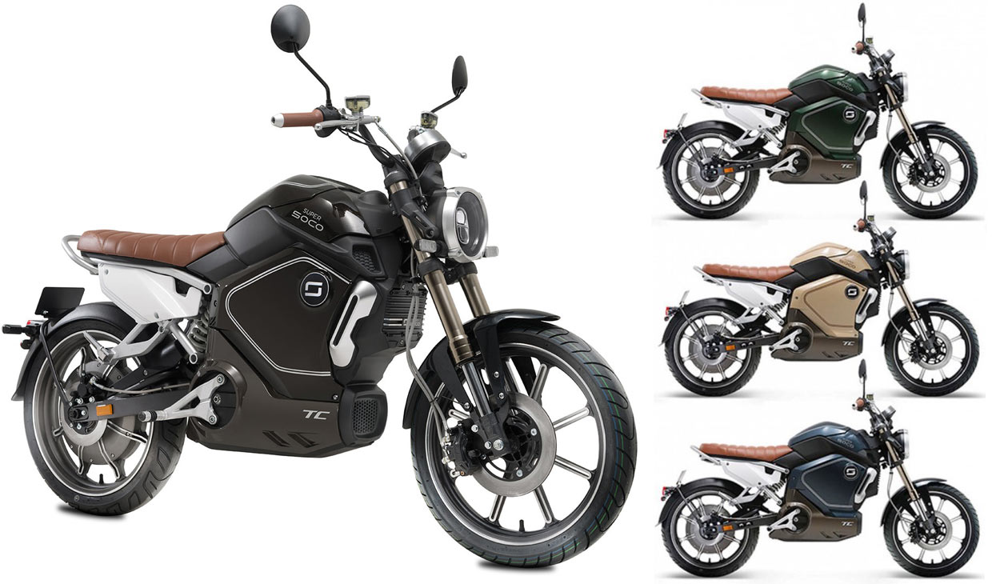

Super Soco TC
O futuro da mobilidade elétrica com design clássico. Disponibilizamos 4 cores diferentes para escolher a que melhor se adapta ao seu estilo pessoal. Design Clássico, Bateria de íons-lítio e motor Bosch com autonomia para 160km com duas baterias.
Design Clássico + Bateria íons-lítio + Motor Bosch = Super Soco TC
Veja abaixo os recursos disponíveis na Super Soco TC.
Motor Bosch de alto desempenho na roda traseira com torque até 150N.m, 550rpm, 92% de eficiência energética, aceleração até 3.000 Watts para obter a potência máxima do motor e inclinação máxima até 17%.
Equipada com uma bateria íons-lítio removível e recarregável permite percorrer 60KM no modo SPORT e até 100KM no modo econômico. Utilize uma bateria extra e dobre sua autonomia até 200KM.
Visualização simples das informações mais importantes relativas à velocidade atual, autonomia, temperatura e modo de condução.
Reservatório de líquido de freio, buzina, teclas nos comandos, bloqueio de guiador, 2 espelhos e acelerador.
Sistema de freio CBS combinado, com componentes de alta qualidade para uma frenagem eficiente e segura. Disco de freio dianteiro de 240 mm, disco de freio traseiro de 180 mm e frente de pinça do pistão duplo.
Controlador externo: a combinação perfeita de desempenho e alcance, distribuição inteligente da força, reação do motor em tempo real com 3 modos de condução.
Botão Push to Start permite ativar a ignição sem chave, para isto basta pressionar o botão para ativar a moto.
Comando de bloqueio remoto com sistema anti-roubo / alarme.
Chave para ativar a Super Soco TC.
Super-resfriamento Super Soco TC.
Assento para dois utilizadores (condutor e passageiro).
Luzes dianteiras.
Luzes traseiras e local da placa.
Apoio de pés do passageiro e suspensão esportiva ajustável indicada para melhorar o conforto e condução do usuário.
Apoio de pés do condutor ajustável em 3 configurações.
Aperte o Play
Veja o porque a Super Soco TC combina com você.
Agende um Test-Ride
Conheça antes de comprar
Agora que você viu como uma Super Soco TC pode mudar seu modo de se locomover, porque não entra em contato conosco e agenda um Test-Ride? Clique no botão abaixo e mande-nos uma mensagem
Entre em Contato